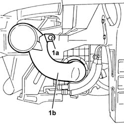
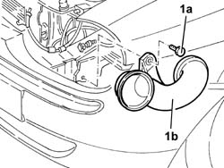

1048A21 filter input sleeve - r r
- Path
- Procedures > 10 ENGINE > 1048 ENGINE AIR SUPPLY CIRCUIT > 1048A vacuum air circuit > 1048A21 filter input sleeve - r r
- Kind
- repair procedure (removal / refitting; the operation number is the code)
- Applies to
- engines: 2.5 V6, 3.2 V6, 1.9 JTD 8v , 2.4 JTD 10v; all production periods
- Interactive page
- https://sloeber94.github.io/elrnDB-a156/en/#/3237527
Applies to: engines: 2.5 V6, 3.2 V6; all production periods
 Removing
Removing
 Refitting
Refitting7055B54 under-engine guard - r r
4450B10 Front WHEEL (one) - R.R.
7055B42 Additional FRONT WHEEL ARCH (one), left or right - R.R.
1. Undo the bolt (1a) and remove the air inlet hose from the socket (1b) after having disconnected it from the air filter casing.

Applies to: engines: 2.5 V6, 3.2 V6; all production periods
Refitting
RemovingFit the air inlet hose from the socket, connect it to the air filter casing and fix it using the bolt.
7055B42 Additional FRONT WHEEL ARCH (one), left or right - R.R.
Applies to: engines: 1.9 JTD 8v , 2.4 JTD 10v; all production periods
Removing
Refitting7055A43 central front grille - r r
7055A41 RIGHT FRONT GRILLE - R.R.
5540B16 FRONT LIGHT CLUSTER with direction indicator (one), left or right - R.R.
1. Undo the bolt (1a), then remove the cold air intake for the filter (1b).

Applies to: engines: 1.9 JTD 8v , 2.4 JTD 10v; all production periods
Refitting
RemovingFit the filter cold air intake and fix it using the bolt.
5540B16 FRONT LIGHT CLUSTER with direction indicator (one), left or right - R.R.
Topics linked from this page (6)
- 4450B10 Front WHEEL (one) - R.R.
- 5540B16 FRONT LIGHT CLUSTER with direction indicator (one), left or right - R.R.
- 7055A41 RIGHT FRONT GRILLE - R.R.
- 7055A43 central front grille - r r
- 7055B42 Additional FRONT WHEEL ARCH (one), left or right - R.R.
- 7055B54 under-engine guard - r r